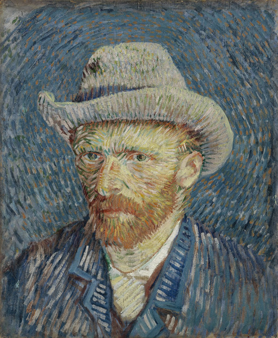

Entre noviembre de 1881 y julio de 1890, Vincent van Gogh pintó casi 900 pinturas. Desde su muerte, se ha convertido en uno de los pintores más famosos del mundo. Las pinturas de Van Gogh han capturado las mentes y los corazones de millones de amantes del arte..
Vincent Van Gogh
ARTISTA POSTIMPRESIONISTA

Biografía
Vincent Van Gogh nació el 30 de marzo de 1853 en Zundert, en el sur de los Países Bajos, hijo de un pastor. En 1869, tomó su primer trabajo, trabajando en la sucursal de La Haya de una firma internacional de comercio de arte. Comenzó a escribirle a su hermano menor Theo, una correspondencia que continuó durante el resto de la vida de Van Gogh.
El trabajo de Van Gogh lo llevó a Londres y París, pero no estaba interesado en el trabajo y fue despedido en 1876. Brevemente se convirtió en maestro en Inglaterra, y luego, profundamente interesado en el cristianismo, predicador en una comunidad minera en el sur de Bélgica.
En 1880, a la edad de 27 años, decidió convertirse en artista. Se movió, enseñándose a sí mismo a dibujar y pintar, y recibió el apoyo financiero de Theo. En 1886, Van Gogh se unió a Theo en París y conoció a muchos artistas, incluidos Degas, Toulouse-Lautrec, Pissarro y Gauguin, con quienes se hizo amigo. Su estilo cambió significativamente bajo la influencia del impresionismo, volviéndose más y más brillante. Pintó una gran cantidad de autorretratos en este período..
En 1888, Van Gogh se mudó a Provenza, en el sur de Francia, donde pintó su famosa serie 'Girasoles'. Invitó a Gauguin a unirse a él, pero pronto comenzaron a pelear y una noche, Van Gogh amenazó a Gauguin con una navaja. Profundamente arrepentido, se cortó parte de su propia oreja..
Esta fue la primera señal grave de los problemas de salud mental que afectarían a Van Gogh por el resto de su vida. Pasó un tiempo en hospitales psiquiátricos y se balanceó entre períodos de inercia, depresión y actividad artística increíblemente concentrada, su trabajo reflejaba los colores intensos y la fuerte luz del campo que lo rodeaba..
El 27 de julio de 1890, nuevamente sufriendo de depresión, Van Gogh se pegó un tiro. Murió dos días después.
Quieres saber mas acerca de Vincent Van Gogh"No sé nada con certeza, pero ver las estrellas me hace soñar".
Galeria de arte
La noche estrellada
1889, Oleo sobre lienzo
Noche estrellada sobre el Ródano
1888, Oleo sobre lienzo
Lirios
1889, Oleo sobre lienzo
Flor de almendro
1890, Oleo sobre lienzo

El dormitorio
1889, Oleo sobre lienzo

Campo de trigo con un segador
1889, Oleo sobre lienzo